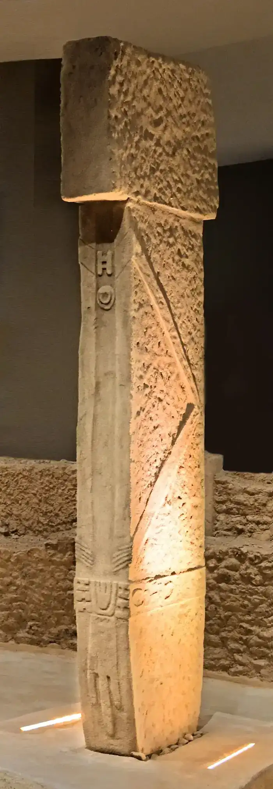
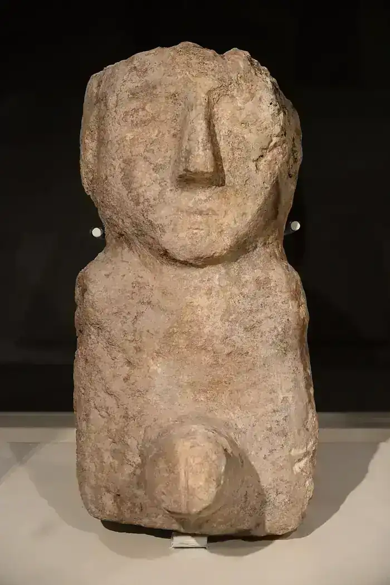
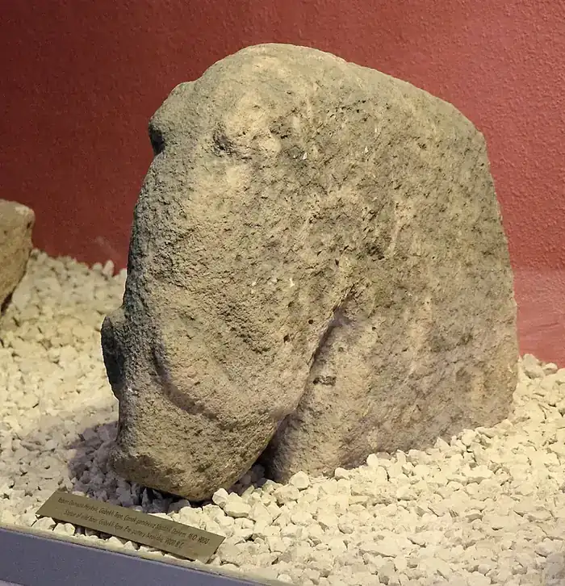

What is actually there
On a limestone ridge in southeastern Turkey, about 15 km from Şanlıurfa, are at least eight circular stone enclosures built from T-shaped limestone pillars, some weighing 16 tons, carved with foxes, snakes, boars, cranes and scorpions. The site is dated to roughly 9500–8000 BC — before pottery, before metal, before writing, and before farming arrived in the region.
Maps, diagrams and images






That date is the reason for its fame. The excavator Klaus Schmidt argued that the scale and craft implied organised labour, specialist skills and ritual purpose among people who were still hunter-gatherers. The headline followed: the temple came before the farm.
The claim that outran the evidence
"Hunter-gatherers built a temple, so religion came before agriculture" is a strong reading of a site that has been only about 5% excavated. Three corrections matter:
- The enclosures may not be temples. "Ritual" is an inference from carvings and arrangement, not a finding. Some researchers argue for domestic or communal use, with feasting and storage as plausible functions.
- The builders were not necessarily pure foragers. Sedentary or semi-sedentary communities, wild-cereal harvesting and intensive gathering are all compatible with the evidence. The farming/hunting binary is the modern frame, not the site's.
- It does not overturn the Neolithic. It revises the local sequence — complexity before domesticates in this region — and that is a real revision, not a revolution in world prehistory.
"It is 12,000 years old and was deliberately buried." The oldest enclosures are around 11,500 years old (calibrated), and the site was indeed backfilled — but the reason is unknown. Abandonment, rebuilding and intentional closure are all consistent.
"The pillars encode a calendar and record a comet strike." A 2024 paper proposed a solar-calendar reading of one enclosure; it has been widely criticised by specialists as over-reading the carvings. Treat it as a hypothesis, not a finding.
"It was built by an unknown civilisation." The builders are the local late-Epipaleolithic population, continuous with the region's archaeology. There is no vanished culture required.
"The site proves Atlantis / ancient astronauts." No. Every claim of that kind depends on ignoring the excavated assemblage — the tools, the faunal remains, the grinding stones.
What it genuinely changed
Before Göbekli Tepe, the textbook sequence was: farming, surplus, sedentism, then monuments. The site, together with Karahan Tepe and other Taş Tepeler sites, shows monumental construction by communities without domesticates — which means the causal arrow between farming and complexity is at least sometimes reversed, or at least entangled.
It also changed the practice of archaeology in the region: a large landscape project now studies the whole ridge complex rather than one hill, and the site has been on the UNESCO World Heritage list since 2018.
Why this entry is "live debate"
The dates and the objects are documented. What is contested is meaning: temple or village, ritual or feasting, specialised priesthood or communal labour. Those questions are exactly what the next decades of excavation will address — which is a healthier situation than either the "it rewrites everything" headline or the "it is just a hill" reaction.
Sources for this page
- UNESCO, Göbekli Tepewhc.unesco.org
- German Archaeological Institute, Göbekli Tepe research projectwww.dainst.org
- Wikipedia, “Göbekli Tepe” — stratigraphy, enclosures, interpretationsen.wikipedia.org
- Wikipedia, “Karahan Tepe” — the wider Taş Tepeler complexen.wikipedia.org
- Şanlıurfa museum and Taş Tepeler project pages on the regional landscapewww.kulturportali.gov.tr
Open resources on this topic
- BookChapter Shaping Gods: from Göbekli Tepe to Kaneš, Ḫattuša, and Beyond — 2023 (Internet Archive, free to read)
- BookAnnie Marguerite Arcangioli L'ancêtre De Gôbekli Tepe — Gérôme Taillandier (Internet Archive, free to read)
- BookPlant Food Processing Tools at Early Neolithic Göbekli Tepe — 2021 (Internet Archive, free to read)
- PapersOpen-access articles: DOAJ · PubMed Central · Internet Archive Scholar
- BooksPublic-domain and borrowable copies: Open Library · Project Gutenberg · Google Books
More images
Cite this page
Momin, S. (2026). Göbekli Tepe. The Larger World Archive. https://drsamonline.github.io/LARGE_GLOBE/gobekli-tepe.htmlMomin, Sohil. “Göbekli Tepe.” The Larger World Archive, 2026, https://drsamonline.github.io/LARGE_GLOBE/gobekli-tepe.html.Momin, Sohil. “Göbekli Tepe.” The Larger World Archive, 2026. https://drsamonline.github.io/LARGE_GLOBE/gobekli-tepe.html.@misc{gbekli2026gobekli,
author = {Momin, Sohil},
title = {Göbekli Tepe},
year = {2026},
howpublished = {The Larger World Archive},
url = {https://drsamonline.github.io/LARGE_GLOBE/gobekli-tepe.html},
note = {Last reviewed 20 November 2026}
}Last reviewed 20 November 2026 · Corrections policy · this page is not peer reviewed